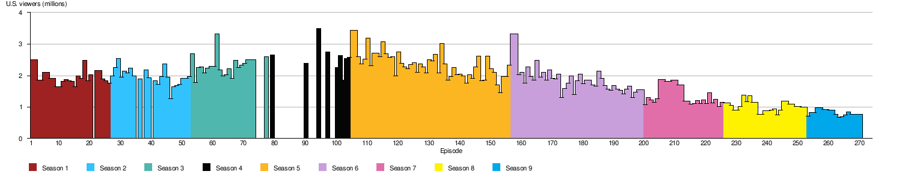

Adventure Time wiki
Intro
Adventure Time[nb 3] is an American animated television series created by Pendleton Ward for Cartoon Network. It follows the adventures of a boy named Finn (voiced by Jeremy Shada) and his best friend and adoptive brother Jake (John DiMaggio)—a dog with the magical power to change shape and size at will. Finn and Jake live in the post-apocalyptic Land of Ooo, where they interact with Princess Bubblegum (Hynden Walch), the Ice King (Tom Kenny), Marceline the Vampire Queen (Olivia Olson), BMO (Niki Yang), and others. The series is based on a 2007 short produced for Nicktoons and Frederator Studios' animation incubator series Random! Cartoons. After the short became a viral hit on the Internet, Cartoon Network commissioned a full-length series, which previewed on March 11, 2010, and officially premiered on April 5, 2010. The series draws inspiration from a variety of sources, including the fantasy role-playing game Dungeons & Dragons and video games. It is produced using hand-drawn animation; action and dialogue for episodes are decided by storyboarding artists. Because each episode takes roughly eight to nine months to complete, multiple episodes are worked on concurrently. The cast members record their lines in group recordings, and the series regularly employs guest actors for minor and recurring characters. Each episode runs for about eleven minutes; pairs of episodes are often telecast to fill half-hour program slots. Eight seasons of the program have aired, and a ninth and final season premiered on April 21, 2017 and is scheduled to conclude in 2018.[6] As of October 2015, a feature-length film is in development. Adventure Time has been a ratings success for Cartoon Network and some episodes have attracted over 3 million viewers; despite being aimed primarily at children, it has developed a following among teenagers and adults. The show has received positive reviews from critics and won awards including: seven Primetime Emmy Awards, a Peabody Award, three Annie Awards, two British Academy Children's Awards, a Motion Picture Sound Editors Award, a Pixel Award, and a Kerrang! Award. The series has also been nominated for three Critics' Choice Television Awards, two Annecy Festival Awards, a TCA Award, and a Sundance Film Festival Award, among others. Of the many comic book spin-offs based on the series, one received an Eisner Award and two Harvey Awards. Various forms of licensed merchandise, including books, video games and clothing, have been inspired by the series.
Contents
Premise
Adventure Time follows the adventures of a boy, Finn the Human (voiced by Jeremy Shada), and his best friend and adoptive brother Jake the Dog (John DiMaggio), who has magical powers to change shape and size at will. Pendleton Ward, the series' creator, describes Finn as a "fiery little kid with strong morals".[7] Jake, on the other hand, is based on Tripper Harrison, Bill Murray's character in Meatballs. This means that while Jake is somewhat care-free, he will "sit [Finn] down and give him some decent advice if he really needs it".[7] Finn and Jake live in the post-apocalyptic Land of Ooo, which was ravaged by a cataclysmic nuclear war a thousand years before the series' events. Throughout the series, Finn and Jake interact with major characters, including: Princess Bubblegum (Hynden Walch), the sovereign of the Candy Kingdom; the Ice King (Tom Kenny), a menacing but largely misunderstood ice wizard; Marceline the Vampire Queen (Olivia Olson), a thousand-year-old vampire and rock music enthusiast; Lumpy Space Princess (Pendleton Ward), a melodramatic and immature princess made out of "lumps"; BMO (Niki Yang), a sentient video game console-shaped robot that lives with Finn and Jake; and Flame Princess (Jessica DiCicco), a flame elemental and ruler of the Fire Kingdom.[8][9][10]
Development
According to series creator Pendleton Ward, the show's style was influenced by his time attending the California Institute of the Arts (CalArts) and his experiences working as a writer and storyboard artist on The Marvelous Misadventures of Flapjack, a series which ran on Cartoon Network from 2008 until 2010. In an interview with Animation World Network, Ward said he strives to combine the series' subversive humor with "beautiful" moments, using Hayao Miyazaki's film My Neighbor Totoro as inspiration.[7] Ward has also named Home Movies and Dr. Katz, Professional Therapist as influences, largely because both shows are "relaxing" and feature "conversational dialogue that feels natural [and is neither] over the top [nor] cartoony and shrill".[11] The series can trace its origin back a seven-minute, stand-alone animated short film of the same name (this short would later be identified as the show's pilot post facto). Ward created the short almost entirely by himself, and concluded its production in early 2006.[12] The film was first broadcast on Nicktoons Network on January 11, 2007,[12][13] and was re-broadcast as part of Frederator Studios' anthology show Random! Cartoons on December 7, 2008.[14][15] After its initial release, the video became a viral hit on the Internet.[7][16] Frederator Studios then pitched an Adventure Time series to Nicktoons Network, which rejected it twice.[17] Eventually, Nicktoons' rights to commission a full series expired, and Frederator—the short's production animation studio—pitched it to other channels.[18] One of the studios that Frederator approached was Cartoon Network, which said it would be willing to produce a series if Ward could prove the short could be expanded into a full series while maintaining elements of the pilot.[17] Rob Sorcher, the chief content officer at Cartoon Network, was influential in getting the network to take a chance on the show; he recognized the series as "something that felt really indie ... comic book-y [and] new".[19] Ward and his production team attempted to "keep the good things about the original short and improve on [them]" while developing the series.[20] His college friends Patrick McHale and Adam Muto (the latter of whom would go on to be an Adventure Time storyboard artist and creative director, as well as the eventual showrunner) helped him to produce a rough storyboard that featured Finn and Princess Bubblegum going on a spaghetti-supper date.[17] Cartoon Network was not happy with this story and asked for another, so Ward, McHale, and Muto created a storyboard for the episode "The Enchiridion!", which was his attempt to emulate the style of the original Nicktoons short. This tactic proved successful, and Cartoon Network approved the first season in September 2008. "The Enchiridion!" was the first episode to enter into production.[17][21][22][23] Ward and his production team began storyboarding episodes and writing plot outlines, but Cartoon Network was still concerned about the direction of the new series. McHale later recalled that during the pitch of an episode titled "Brothers in Insomnia" (which, for various reasons, was eventually scrapped) the room was filled with executives from Cartoon Network. The pitch went well, but the production staff was soon inundated with questions about the stylistic nature of the series. Hoping to resolve these issues, Cartoon Network management hired three veteran animators who had worked on SpongeBob SquarePants: Derek Drymon (who served as executive producer for the first season of Adventure Time), Merriwether Williams (who served as head story editor for the show's first and second seasons), and Nick Jennings (who became the series' long-serving art director).[24] Thurop Van Orman, the creator of The Marvelous Misadventures of Flapjack, was also hired to guide Ward and his staff for the first two seasons.[25] Eventually, the storyboard for "Prisoners of Love" managed to assuage many of the fears that some Cartoon Network executives had expressed.[26] Other artists were soon brought on board. Dan "Ghostshrimp" Bandit, a freelance illustrator who had also written and storyboarded on Flapjack, was hired as the show's lead background designer; Ward told him to create background art that decidedly set the show "in a 'Ghostshrimp World'".[7][27] Ghostshrimp designed major locations, including Finn and Jake's home, the Candy Kingdom, and the Ice Kingdom.[27] The position of lead character designer was eventually given to Phil Rynda, who held this role for two-and-a-half seasons. The lead production crew for the show (which included Ward and McHale) were initially hesitant to bring him on board, but they were soon convinced by director Larry Leichliter, who assured them that Rynda was talented and could draw in a variety of styles.[28] With the producers satisfied, Rynda quickly began designing characters that fell in line with "Pen's natural aesthetic".[20] At the same time, he also sought to craft simple designs "that any kid could draw and identify with".[20] Additionally, Rynda and McHale began drafting artistic guidelines for the show, so that its animation style would always be somewhat consistent.[29] With many of the lead production roles filled, Ward turned his attention to choosing storyboard artists for the first season. Eventually, he assembled a team made up largely of "younger, inexperienced people", many of whom he discovered on the Internet.[30] For the first four-and-a-half seasons of the show, Ward served as the showrunner for Adventure Time. In an interview with Rolling Stone, Ward revealed that he had stepped down from this role sometime during the fifth season. As a naturally introverted person, he found dealing with people every day to be exhausting. Following Ward's resignation from the post, Adam Muto became the series' new showrunner. Until late 2014, Ward continued to work on the cartoon as a storyboard artist and storyline writer.[31] After November 2014, he stopped writing episode stories and focused on producing an Adventure Time film. However, Ward still looked over stories and provided occasional input, and he continued to storyboard for the series on a limited basis.[31][32][33]
Production
Writing
Ward described the show as a "dark comedy" and said he enjoys experiencing ambivalent emotions, such as the feeling of being "happy and scared at the same time".[34] He has also cited the fantasy role-playing game Dungeons and Dragons—of which many of the show's writers are devotees—as an inspiration for the show.[35][36] Ward intends the show's world to have a coherent physical logic, and although magic exists in the story, the show's writers try to create an internal consistency in the characters' interactions with the world.[7][37] In the United States, the series is rated TV-PG;[38] Ward has said he does not want to push the boundaries of the PG rating, noting, "I've never really even thought about the rating ... we don't like stuff that's overly gross. We like cute stuff and nice things."[39] In an interview with The A.V. Club, Ward said the show's writing process usually begins with the writers telling each other what they had done the previous week to find something humorous to build on. He also said, "a lot of the time, if we're really stuck, we'll start saying everything that comes to our mind, which is usually the worst stuff, and then someone else will think that's terrible but it'll give him a better idea and the ball just starts rolling like that".[36] Because of the busy schedule of writing and coordinating a television series, the writers no longer have time to play Dungeons and Dragons, but they still write stories they would "want to be playing D&D with".[36] Sometimes, the writers and storyboard artists convene and play writing games.[40] One game is called exquisite corpse; one writer starts a story on a sheet of paper, and another writer tries to finish it.[40][41] However, Ward has said, "The ideas are usually terrible".[41] Former storyboard artist and current creative director Cole Sanchez said episode scripts are either created by expanding the good ideas produced by these writing games, or are based on an idea proposed by a storyboard artist in the hope it can be developed into an episode.[40] After the writers pitch stories, the ideas are compiled onto a two-or-three-page outline that contains "the important beats".[42] The episodes are then passed to storyboard artists (often referred to colloquially as "boarders"). While many cartoons are based on script pitches to network executives, Cartoon Network allowed Adventure Time to "build their own teams organically" and communicate using storyboards and animatics.[9] Rob Sorcher said this novel approach was sanctioned because the company was dealing with "primarily visual people", and that by using storyboards the writers and artists could learn and grow "by actually doing the work".[9] The storyboard artists generally work on an episode in pairs, independent from other storyboarders, which, according to freelance writer David Perlmutter in his book America Toons In, prevents creative ennui and prevents episodes from being "alike in either content or tone".[43] Many members of the series' production staff have backgrounds in indie comics, and Pendleton Ward has called them "really smart, smartypants people" who were responsible for inserting more idiosyncratic and spiritual ideas into the series.[44] The storyboard artists are given a week to "thumbnail" (roughly sketch out) a storyboard and fill in the details complete with action, dialogue, and jokes.[39][42] The series' showrunner and his creative directors then review the storyboard and make notes. The artists are then given another week to implement the notes and to clean up the episode.[39] Storyboard writing and revising can take up to a month.[45]
Animation
Following the writing revisions, voice acting for the episodes is recorded and an animatic is compiled to reduce the running time to the necessary eleven minutes. Prop, character, and background designers then create and clean up the designs. After this, the animation process begins.[45][46] Joy Ang, the person in charge of making all the Title Cards at the beginning of each episode of the serie. While the episodes' design and coloring are done in Burbank, California, the animation is handled in South Korea by either Rough Draft Korea or Saerom Animation.[46][47] Animating an episode can take between three and five months.[45][46] During this time, retakes, music scoring, and sound design are completed.[45] Once the animation is finished, it is sent back to the United States where it is reviewed; the staff look for mistakes in the animation or "things that didn't animate the way [the staff] intended".[46] These problems are then fixed in Korea and the episode is finished.[46] It takes between eight and nine months for each episode to be created; because of this, multiple episodes are worked on concurrently.[36][45][46] According to former lead character designer Phil Rynda, most pre-production is done in Photoshop.[48] The animation is hand-drawn on paper, which is then digitally composited and painted with digital ink and paint.[49][50] Executive producer Fred Seibert compared the show's animation style to that of Felix the Cat and various Max Fleischer cartoons, but said its world was equally inspired by video games.[35][37] While a great majority of the series' episodes are animated by Korean animation studios, Adventure Time has occasionally featured guest animators. For instance, the second-season episode "Guardians of Sunshine" was partly rendered in 3-D to emulate the style of a video game.[49] The fifth-season episode "A Glitch is a Glitch" was written and directed by Irish filmmaker and writer David OReilly, and features his distinctive 3-D animation.[51] Animator James Baxter animated select scenes and characters in both the fifth-season episode "James Baxter the Horse" as well as the eighth-season entry "Horse & Ball".[52][53] The sixth-season episode "Food Chain" was written, storyboarded, and directed by Japanese anime director Masaaki Yuasa, and was animated entirely by Yuasa's own studio.[54][55] Another sixth-season episode, "Water Park Prank", features Flash animation by David Ferguson.[56] A stop-motion episode titled "Bad Jubies", directed by Kirsten Lepore, aired near the middle of the show's seventh season.[57][58] Finally, Alex and Lindsay Small-Butera, noted for their web series Baman Piderman, contributed animation for the eighth-season episode "Beyond the Grotto" and the ninth-season installment "Ketchup".[59][60]
Cast
The series' voice actors include: Jeremy Shada (Finn the Human); John DiMaggio (Jake the Dog); Tom Kenny (The Ice King); Hynden Walch (Princess Bubblegum); and Olivia Olson (Marceline the Vampire Queen). Ward provides voices for several minor characters and Lumpy Space Princess. Former storyboard artist Niki Yang voices the sentient video game console BMO in English, and Jake's girlfriend Lady Rainicorn in Korean. Polly Lou Livingston, a friend of Pendleton Ward's mother Bettie Ward, plays the voice of the small elephant named Tree Trunks.[8][61] The Adventure Time cast members record their lines together at group recording sessions rather than individually, with the aim of recording natural-sounding dialogue.[62] Hynden Walch has described these group recordings as being akin to "doing a play reading—a really, really out there play".[63] The series regularly employs guest actors for minor and recurring characters.[64] Crew members cast people with whom they are interested in working. For instance, in a panel, both Adam Muto and Kent Osborne said the Adventure Time crew has attempted to cast actors from Star Trek: The Next Generation and The Office as various supporting or background characters.[65]
Setting and mythology
The show is set in the fictional "Land of Ooo", in a post-apocalyptic future about a thousand years after a nuclear holocaust called the "Great Mushroom War".[66] According to Ward, the show takes place "after the bombs have fallen and magic has come back into the world".[67] Before the series was fully developed, Ward intended the Land of Ooo to be simply "magical". After the production of the episode "Business Time", in which an iceberg containing reanimated businessmen floats to the surface of a lake, the show became explicitly post-apocalyptic; Ward said the production crew "just ran with it".[34] Ward later described the setting as "candyland on the surface and dark underneath",[9] noting he had never intended the Mushroom War and the post-apocalyptic elements to be "hit over the head in the show".[68] He limited it to "cars buried underground in the background [and other elements that do not] raise any eyebrows".[68] Ward has said the series' post-apocalyptic elements were influenced by the 1979 film Mad Max.[34] Kenny called the way the elements are worked into the plot "very fill-in-the-blanks", and DiMaggio said, "it's been obvious the Land of Ooo has some issues".[68] The series has a canonical mythology—an overarching plot and backstory—that is expanded upon in various episodes.[69][70] The backstory involves mainly the Mushroom War, the origin of the series' principal antagonist the Lich, and the backstories of several of the series' principal and recurring characters.[69][70][71] Ward has said the details behind the Mushroom War and the series' dark mythology form "a story worth telling", and that he feels the show will "save it and continue to dance around how heavy the back-history of Ooo is".[72]
Title sequence and music
When Ward was developing the series' title sequences, the rough draft version consisted of quick shots and vignettes that were "just sort of crazy [and] nonsensical", which alluded to the show's theme of quirky adventures.[39] These drafts included "the characters ... just punching random ghosts and monsters, jumping through anything and everything [and] there were a bunch of atomic bombs at the end of it".[39] Ward later called this version "really silly".[39] He sent the draft to Cartoon Network; they did not like it and wanted something more graphical like the introduction to The Brady Bunch. Inspired by the title sequences of The Simpsons and Pee-wee's Playhouse, Ward developed a new title sequence that featured a panning sweep of the Land of Ooo while a synthesizer note rose slowly until the main theme was played. Ward's draft for this idea was handed to layout animators, who then finalized the timing for the sequence. From there, the sequence evolved; while Ward added "silly character stuff", Patrick McHale worked on the Ice King's shot and gave him a "high school [year]book" smile. The crew also struggled to get the shadows in the shot featuring Marceline correct.[39] After the panning sweep, the sequence cuts to the theme song as shots of Finn and Jake adventuring are shown. For this part of the sequence, Ward was inspired by the "simple" aspects of the introduction to the 2007 comedy film Superbad. When the theme mentions "Jake the Dog" and "Finn the Human", the characters' names are displayed next to their heads, with a solid color in the background.[39] The sequence was finalized immediately before the series aired.[39] The show's eponymous theme song is sung by Ward, accompanied by a ukulele. It is first heard in the pilot episode; in that version Ward is accompanied by an acoustic guitar. For the version used in the series, Ward sung in a higher register to match with the higher range of the ukulele.[39] The finalized version of the theme song was originally supposed to be a temporary version. Ward said, "I recorded the lyrics for the opening title in the animatics room where we have this little crummy microphone just so that we could add it to the titles and submit it to the network. Later, we tried re-recording it and I didn't like it ... I only liked the temp one!"[39] Because the series' finalized theme song was originally recorded as a temp track, ambient noises can be hard throughout. For instance, the sound of Derek Drymon typing can be heard while Jake is walking through the Ice Kingdom. According to Ward, much of the series' music has similar "hiss and grit" because one of the show's original composers, Casey James Basichis, "lives in a pirate ship he's built inside of an apartment [and] you can hear floorboards squeak and lots of other weird sounds".[39] As the show progressed, Basichis's friend Tim Kiefer joined the show as an additional composer.[73] The two now work together on its music.[74] The show's title sequence and theme song have stayed mostly consistent throughout its run, with four exceptions. During the "Fionna and Cake" episode, the series runs a different intro sequence that mirrors the original; however, all the characters are gender-bent, and the theme is sung by former storyboard revisionist Natasha Allegri.[75] Likewise, the intro to the series' three miniseries are each unique: the introduction to the Marceline-centric Stakes (2015) miniseries places most of the emphasis on Marceline, and the theme song is sung by Olivia Olson;[76] the introduction to Islands (2017) adopts a nautical theme, highlights the principal characters in the miniseries (i.e., Finn, Jake, Susan Strong (voiced by Jackie Buscarino), and BMO), and is sung by Jeremy Shada;[77] finally, the intro to Elements (2017) features imagery reflecting the four primary elements in the Adventure Time universe (viz. fire, ice, slime, and candy) and is sung by Hynden Walch.[78] The series regularly features songs and musical numbers. Many of the cast members—including Shada, Kenny, and Olson—sing their characters' songs.[63][79][80] Characters often express their emotions in song; examples of this include Marceline's song "I'm Just Your Problem" and Finn's "All Gummed Up Inside".[81][82] Although the series' background music is composed by Basichis and Kiefer, the songs sung by characters are often written by the storyboard artists.[83][84] For instance, the "Fry Song" was written by storyboard artist Rebecca Sugar, who storyboarded its parent episode "It Came from the Nightosphere".[84] Frederator, Seibert's production company, often uploaded demos and full versions of songs sung by the characters to their official website.[85][86] The show also rarely, but occasionally, refers to popular music.[87][88][89]
Broadcast and ratings
Episodes
Each Adventure Time episode is about eleven minutes in length; pairs of episodes are often telecast in order to fill a half-hour program time slot.[90] Before the official debut of the first season, Cartoon Network aired both "Business Time" and "Evicted!" on March 11 and March 18, respectively, advertising these showings as "previews" of the series-to-come.[91][92] The show officially debuted with "Slumber Party Panic" on April 5, 2010.[93] During the latter part of its run, the show began to experiment with the miniseries format. The first of these was Stakes (2015), which aired during the show's seventh season. The following season, Islands (2016) aired. The third and final miniseries, Elements (2016), aired during the show's ninth season.[94][95][96] On September 29, 2016, it was announced that the series would conclude in 2018, after the airing of its ninth season.[6]
| Season | Episodes | Originally aired | ||
|---|---|---|---|---|
| Premiere | Finale | |||
| Pilot | January 11, 2007 | |||
| 1 | 26 | April 5, 2010 | September 27, 2010 | |
| 2 | 26 | October 11, 2010 | May 9, 2011 | |
| 3 | 26 | July 11, 2011 | February 13, 2012 | |
| 4 | 26 | April 2, 2012 | October 22, 2012 | |
| 5 | 52 | November 12, 2012 | March 17, 2014 | |
| 6 | 43 | April 21, 2014 | June 5, 2015 | |
| 7 | 26 | November 2, 2015 | March 19, 2016 | |
| 8 | 27 | March 26, 2016 | February 2, 2017 | |
| 9 | TBA | April 21, 2017 | 2018 | |
| Shorts | 10 | July 10, 2012 | TBA | |
^* It should be noted that, in regards to the production-side of things, the show's seventh season was originally supposed to comprise episodes "Bonnie & Neddy" though "Reboot" (for a total of 39 episodes),[nb 4] its eighth season was supposed to comprise the episodes "Two Swords" through "Three Buckets" (for a total of 28 episodes),[nb 5] and its ninth season was supposed to comprise the episodes "The Wild Hunt" through the series finale.[102] However, when it came time to upload the seventh season onto streaming sites like CartoonNetwork.com, Cartoon Network split the seventh season into parts, ending it with "The Thin Yellow Line."[103] This new episode count for the season was cemented by the release of the complete seventh season DVD on July 18, 2017, which included episodes "Bonnie & Neddy" through "The Thin Yellow Line".[104] The network then began counting episodes "Broke His Crown" through the Islands miniseries as making up season eight.[105]
Ratings
Since its debut, Adventure Time has been a ratings success for Cartoon Network. In March 2013, it was reported that the show averaged roughly 2 to 3 million viewers an episode.[14] According to a 2012 report by Nielsen, the show consistently ranked first in its time slot among boys aged 2–14.[9] The show premiered on April 5, 2010, and was watched by 2.5 million viewers.[106] The episode was a ratings success. According to a press release by Cartoon Network, the episode's time slot saw triple-digit percentage increases from the previous year. The program was viewed by 1.661 million children aged 2–11, which marked a 110 percent increase from the previous year's figures. It was watched by 837,000 children aged 9–14, a 239 percent increase on the previous year's figures.[107] Between the second and sixth seasons, the show's ratings continued to grow; the second-season premiere was watched by 2.001 million viewers, the third-season premiere by 2.686 million, the fourth-season premiere by 2.655 million, the fifth-season premiere by 3.435 million, and the sixth-season premiere by 3.321 million.[108][109][110][111][112] The show's seventh-season opener took a substantial ratings tumble, being watched by only 1.07 million viewers.[113] Likewise, the eighth- and ninth-season premieres were watched by only 1.13 and 0.71 million viewers, respectively.[114][115]
Reception
Critical reviews
The show has received positive reviews from critics. The A.V. Club reviewer Zack Handlen called it "a terrific show [that] fits beautifully in that gray area between kid and adult entertainment in a way that manages to satisfy both a desire for sophisticated (i.e., weird) writing and plain old silliness".[117] Adventure Time has been complimented for its resemblance to cartoons of the past. In an article for the Los Angeles Times, television critic Robert Lloyd compared the series to "the sort of cartoons they made when cartoons themselves were young and delighted in bringing all things to rubbery life".[93] Robert Mclaughlin of Den of Geek expressed a similar sentiment when he wrote that Adventure Time "is the first cartoon in a long time that is pure imagination".[118] He complimented the show for "its non-reliance on continually referencing pop culture".[118] Eric Kohn of IndieWire said the show "represents the progress of [cartoon] medium" in the current decade.[119] A number of reviews have positively compared the series and its creators to other culturally significant works and individuals, respectively. In 2013, Entertainment Weekly reviewer Darren Franich called the series "a hybrid sci-fi/fantasy/horror/musical/fairy tale, with echoes of Calvin and Hobbes, Hayao Miyazaki, Final Fantasy, Richard Linklater, Where the Wild Things Are, and the music video you made with your high school garage band".[120] Emily Nussbaum of The New Yorker praised Adventure Time's unique approach to emotion, humor, and philosophy by likening it to "World of Warcraft as recapped by Carl Jung".[121] Zack Handlen of The A.V. Club concluded that the show was "basically what would happen if you asked a bunch of 12-year-olds to make a cartoon, only it's the best possible version of that, like if all the 12-year-olds were super geniuses and some of them were Stan Lee and Jack Kirby and the Marx Brothers".[117] Adventure Time's willingness to explore dark, sad, and complex issues has received praise. Kohn applauded the fact that the show "toys with an incredibly sad subtext."[119] Novelist Lev Grossman, in an interview with NPR, praised the backstory of the Ice King and the exploration of his condition in the third-season episode "Holly Jolly Secrets", the fourth-season episode "I Remember You", and the fifth-season episode "Simon & Marcy", noting that his origin is "psychologically plausible."[122] Grossman praised the way the series was able to tackle the issues of mental illness, saying: "It's very affecting. My dad has been going through having Alzheimer's, and he's forgotten so much about who he used to be. And I look at him and think this cartoon is about my father dying."[122] Critics have suggested that the show has grown and matured as it has aged. In a review of season four, for instance, Mike LeChevallier of Slant magazine complimented the show for "growing up" with its characters.[123] He concluded that the series has "strikingly few faults" and awarded the fourth season three-and-a-half stars out of four.[123] The series has been included on a number of best-of lists. Entertainment Weekly ranked it number 20 (out of 25) in a list of the "Greatest Animated TV Series".[116][124] Similarly, The A.V. Club, in a non-ranked run-down of the "best animated series ever", called the series "one of the most distinctive cartoons currently on the air".[125] The show has also received limited criticism from reviewers. LeChevallier, in an otherwise largely positive review of the third season for Slant magazine, wrote that "the short-form format leaves some emotional substance to be desired", and that this was inevitable for a series with such short episodes.[126] The independent cartoon scholar and critic David Perlmutter, who otherwise applauded the show's voice acting and its ability to transcend its source material,[43] argued that the show's vacillation between high and low comedy epitomizes the fact that Cartoon Network is "unsure of what direction to pursue".[43] He noted that "while some of [Adventure Time's] episodes work well, others [are] simply confusing."[43] The newspaper Metro cited the show's frightening situations, occasional adult themes, and use of innuendo as reason why parents might not want their young children watching it.[127]
Industry impact
Several former storyboard artists and production crew members who worked on Adventure Time have gone on to create their own series, including Pat McHale (Over the Garden Wall),[128] Rebecca Sugar (Steven Universe),[129] Ian Jones-Quartey (OK K.O.! Let's Be Heroes),[130] Skyler Page (Clarence),[131] and Julia Pott (Summer Camp Island).[132] Heidi MacDonald of Slate has argued that the scouting of indie comic creators employed by Adventure Time (as well as several other Cartoon Network and Nickelodeon series) has led to an "animation gold rush" in which major studios are actively seeking under-the-radar talent for their shows, with her article surmising that "your favorite brilliant indie cartoonist is probably storyboarding for Adventure Time."[133] MacDonald also pointed out that Adventure Time has influenced the tone of modern comics, noting:
If anything, walking around [comic] shows like SPX, I've noticed something of an Adventure Time track among many of the small press comics now coming out: Where once young cartoonists overwhelmingly produced gloomy masculine self-absorption and misanthropy in the tradition of Daniel Clowes or Chris Ware, these days many booths feature fantasy epics with colorful characters and invented worlds heavy on the talking animals. It shouldn't be surprising that up-and-coming cartoonists are absorbing the Adventure Time aesthetic. A 20-year-old making comics now could have been watching the show since she was 15, after all.[133]
Academic interest
Adventure Time has attracted academic interest for its examination of gender and gender roles. Emma A. Jane, a senior research fellow at the University of New South Wales in Sydney, Australia, said although the two main characters are male, and that many episodes involve them engaging in violent acts to save princesses, "Finn and Jake are part of an expansive ensemble cast of characters who are anything but stereotypical and who populate a program which subverts many traditional gender-related paradigms".[134] She said the show features "roughly equal numbers of female and male characters in protagonist, antagonist, and minor roles"; includes characters with no fixed gender; uses "gendered 'design elements'" such as eyelashes and hair to illustrate character traits rather than gender; equally distributes traits regardless of gender; privileges found, adoptive families or extended families; frames gender in ways that suggest it is fluid; and features elements of queer and transgender sub-text.[134] Carolyn Leslie, writing in Screen, agrees, saying, "despite having two male leads, Adventure Time is particularly strong when it comes to questioning and challenging gender stereotypes".[135] She uses Princess Bubblegum, BMO, and Fionna and Cake as examples of characters who refuse to be readily categorized and genderized.[135]
Fandom
Since its debut, Adventure Time has developed a strong following among children, teenagers, and adults; according to A.V. Club critic Noel Murray, fans are drawn to Adventure Time because of "the show's silly humor, imaginative stories, and richly populated world".[36] While the show is often described as having a cult following,[31][136] Eric Kohn of IndieWire said that the series has "started to look like one of the biggest television phenomenons of the decade".[137] According to Alex Heigl of People magazine, "The show's fandom is especially Internet-savvy as well, with huge communities on Reddit, Imgur and Tumblr, who swap GIFs, fan art and theories with fervent regularity."[138] In 2016, a New York Times study of the 50 TV shows with the most Facebook Likes found that Adventure Time "is the most popular show among the young in our data—just over two-thirds of 'likes' come from viewers [aged] 18–24".[139] The show is popular at fan conventions, such as the San Diego Comic-Con.[137] Reporter Emma-Lee Moss said, "This year's [2014] Comic-Con schedule reflected Adventure Time's growing success, with several screenings [as well as] a dramatic reading with the show's voice talent".[140] The show is also popular with cosplayers, or performance artists who wear costumes and fashion accessories to represent characters from the Adventure Time universe. Moss wrote, "Looking into the crowd, it was clear that [Finn's] distinctive blue shirt and white hat were being mirrored by hundreds of Cosplayers, male and female."[140] In an interview, Olivia Olson (who voices the character Marceline) said, "Literally, anywhere you look, anywhere in your range, you're going to see at least two people dressed up like Finn. It's crazy."[141]
Related media
Comic books
On November 19, 2011, KaBOOM! Studios announced plans for an Adventure Time comic book series written by independent web comic creator Ryan North, who wrote the series Dinosaur Comics.[196][197] The series launched on February 8, 2012, with art by Shelli Paroline and Braden Lamb.[198][199] In October 2014, it was revealed that North had left the comic series after three years. His duties were assumed by Christopher Hastings, the creator of The Adventures of Dr. McNinja.[200] After the success of the ongoing comic book line, several spin-off mini-series were launched. In April 2012, a six-issue miniseries titled Adventure Time: Marceline and the Scream Queens written by Meredith Gran—who created the series Octopus Pie—was announced. It was launched in July 2012 and features the characters Marceline and Princess Bubblegum touring the Land of Ooo as part of Marceline's rock band, The Scream Queens.[201] Another six-issue miniseries, Adventure Time with Fionna & Cake was launched in January 2013. This series, drawn by Adventure Time series character designer and storyboard revisionist Natasha Allegri, follows the gender-bent characters Fionna the Human and Cake the Cat from the episode "Fionna and Cake".[202] Other spin-off comic series including Candy Capers, Flip Side, Banana Guard Academy, and Adventure Time: Ice King, have been released, each written and illustrated by different writers and artists.[203][204][205][206] One-shot spin-offs have also been announced; the first, Spoooktacular #1, was released in October 2015.[207] A separate line of comics, officially denoted as graphic novels, have also been released. The first of these, titled Adventure Time: Playing with Fire, was written by Danielle Corsetto and illustrated by Zack Sterling. It was released in April 2013, and focuses on Flame Princess's "very first adventure" with Finn and Jake.[208] Playing with Fire was followed by several other volumes, including: Pixel Princesses (November 6, 2013),[209] Seeing Red (May 2, 2014),[210] Bitter Sweets (November 11, 2014),[211] Graybles Schmaybles (May 12, 2015),[212] Masked Mayhem (November 11, 2015),[213] The Four Castles (May 17, 2016),[214] President Bubblegum (September 27, 2016),[215] Brain Robbers (March 28, 2017),[216] and The Ooorient Express (announced for July 18, 2017).[217]
Other literature
Other Adventure Time-themed books have also been released. The Adventure Time Encyclopaedia, published on July 22, 2013, was written by comedian Martin Olson, father of Olivia Olson and the voice of recurring character Hunson Abadeer.[218] This was followed by Adventure Time: The Enchiridion & Marcy's Super Secret Scrapbook!!!, which was released on October 6, 2015. Written by Martin and Olivia Olson, it is presented as a combination of the Enchiridion and Marceline's secret diary.[219] An official Art of ... book, titled The Art of Ooo was published on October 14, 2014. It contains interviews with cast and crew members, and opens with an introduction by film-maker Guillermo del Toro.[220] Two volumes with collections of the show's title cards have also been released,[221][222] as has a cookbook with recipes inspired by the show,[223] and a series of prose novels published under the header "Epic Tales from Adventure Time" (which includes The Untamed Scoundrel, Queen of Rogues, The Lonesome Outlaw, and The Virtue of Ardor, all of which were published under the pseudonym "T. T. MacDangereuse").[224][225][226][227]
Video games
The series has spawned several major video game releases. The first game based on the series, Adventure Time: Hey Ice King! Why'd You Steal Our Garbage?!!, was announced by Pendleton Ward on his Twitter account in March 2012.[228] The game was developed by WayForward Technologies for Nintendo DS and Nintendo 3DS, and was released by D3 Publisher on November 20, 2012.[229][230] A year later, the game Adventure Time: Explore the Dungeon Because I Don't Know!, which follows Finn and Jake as they strive "to save the Candy Kingdom by exploring the mysterious Secret Royal Dungeon deep below the Land of Ooo",[231] was released in November 2013.[231] On November 18, 2014, Adventure Time: The Secret of the Nameless Kingdom was released for Nintendo 3DS, Xbox 360, PlayStation 3, and Microsoft Windows.[232] In October 2015, the fourth major Adventure Time video game, titled Finn & Jake Investigations, was released. It is the first in the series to feature full 3D graphics.[233] Various other minor video games have also been released. Several, including Legends of Ooo, Fionna Fights, Beemo – Adventure Time, and Ski Safari: Adventure Time, have been released on the iOS App Store.[234] A game titled Finn & Jake's Quest was released on April 11, 2014, on Steam.[235] Cartoon Network also released a multiplayer online battle arena (MOBA) game titled Adventure Time: Battle Party on Cartoon Network's official site, on June 23, 2014.[236] In April 2015, two downloadable content packs for LittleBigPlanet 3 on PlayStation 3 and PlayStation 4 were released; one contained Adventure Time costumes, while the other contained a level kit with decorations, stickers, music, objects, a background, and a bonus Fionna costume.[237] A virtual reality (VR) game entitled Adventure Time: Magic Man's Head Games was also released to Oculus Rift, HTC Vive, and PlayStation VR.[238] A second VR game, entitled Adventure Time: I See Ooo, was released on September 29, 2016.[239] In that same month, Adventure Time characters were added to the Lego Dimensions game.[240][241]
Other merchandise
A variety of officially licensed merchandise—including action figures, role-playing toys, bedding, dishware, and various other products—have been released.[242] Since the dramatic increase in popularity of the series, many graphic T-shirts have been officially licensed through popular clothing retailers.[243][244][245] Pendleton Ward hosted T-shirt designing contests on the websites of both We Love Fine and Threadless.[245][246] Other shirts can be purchased directly from Cartoon Network's store.[247] A collectible card game called Card Wars, inspired by the fourth-season episode of the same name, has been released.[248] On March 11, 2016, it was announced by Lego via Lego Ideas that an official Adventure Time Lego set from an idea by site user, aBetterMonkey, had met voting qualifications and was approved to be produced in cooperation with Cartoon Network.[249][250] The set was released in January 2017.[251]
Film
In February 2015, it was reported that a theatrical Adventure Time film was being developed by Cartoon Network Studios, Frederator Films, Vertigo Entertainment, and Warner Animation Group. The film is being executive produced and written by Pendleton Ward, and produced by Roy Lee and Chris McKay.[252] In October 2015, series producer Adam Muto confirmed that series creator Pendleton Ward is still currently "working on the premise" for the film, but that there was "nothing official to announce yet".[253]
Other appearances
"Leela and the Genestalk", an episode from the seventh season of the animated Comedy Central program Futurama, features a cameo of Finn and Jake, with DiMaggio reprising his role as Jake for the appearance.[254] Similarly, the twenty-eighth season premiere of the Fox series The Simpsons, entitled "Monty Burns' Fleeing Circus", includes a couch gag that parodies the title sequence to Adventure Time, complete with Pendleton Ward himself singing a spoof of the Adventure Time theme song. According to Al Jean, the executive producer of The Simpsons, "[The couch gag] was the brain child of Mike Anderson, our supervising director ... It's a really beautiful, elaborate crossover."[255] Early in the movie Deadpool (2016), there is a scene where Wade is riding in a taxi. When he looks down at his wrist, he is seen to be wearing an Adventure Time watch, which he has on upside down.[256]
Home media
On September 27, 2011, Cartoon Network released the region 1 DVD My Two Favorite People, which features a selection of twelve episodes from the series' first two seasons.[257][258] Following this, several other region-1 compilation DVDs have been released, including: It Came from the Nightosphere (2012), Jake vs. Me-Mow (2012), Fionna and Cake (2013), Jake the Dad (2013), The Suitor (2014), Princess Day (2014), Adventure Time and Friends (2014), Finn the Human (2014), Frost & Fire (2015), The Enchiridion (2015), Stakes (2016), Card Wars (2016), and Islands (2017).[257] In addition, the first seven seasons have been released on DVD, and the first six have been released on Blu-ray.[257] On March 30, 2013, the first season of Adventure Time was made available on the Netflix Instant Watch service for online streaming; the second season was made available on March 30, 2014.[259][260] Both seasons were removed from Netflix on March 30, 2015,[261] although the series was eventually made available for streaming via Hulu on May 1, 2015.[262]
Explanatory notes
- Larry Leichliter served as director until the fifth-season episode "Bad Little Boy". After this episode, the term was phased out in favor of "supervising director", and the following have served in this role: Nate Cash (season 5), Adam Muto (seasons 5–9), Elizabeth Ito (seasons 5–9), Kent Osborne (season 6), Andres Salaff (seasons 6–8), and Cole Sanchez (seasons 6, 8–9). Guest directors for the series have included: David OReilly ("A Glitch Is a Glitch"), Masaaki Yuasa ("Food Chain"), David Ferguson ("Water Park Prank"), and Kristen Lepore ("Bad Jubies"). However, the term "art director" was retained; Nick Jennings (seasons 1–6) and Sandra Lee (seasons 6–9) have served in this capacity.
- Jump up ^ Ten additional shorts (i.e., mini-episodes roughly two minutes in length) were also produced.
- Jump up ^ In its first season, the series was often billed Adventure Time with Finn and Jake[4] because the producers were unsure whether they could secure the rights to the simpler title Adventure Time.[5]
- Jump up ^ This is based on the fact that, in the past, Muto had explicitly referred to "Preboot"/"Reboot" as being the original season seven finale episodes.[98] Furthermore, an image that hung in showrunner Adam Muto's office includes a listing of episodes "Bonnie & Neddy" through "Reboot", explicitly identifying them all as season seven episodes.[99]
- Jump up ^ This is based on two facts: first, the official Adventure Time production blog announced in January 2017 that "Two Swords"/"Do No Harm" collectively made up the eighth season premiere.[100] Second, Adam Muto explicitly confirmed that "Three Buckets" was envisioned as the season eight finale by the production crew prior to "the official season divisions [having been] moved around."[101]
- Jump up ^ Complete sources for these numbers can be found at List of Adventure Time episodes.